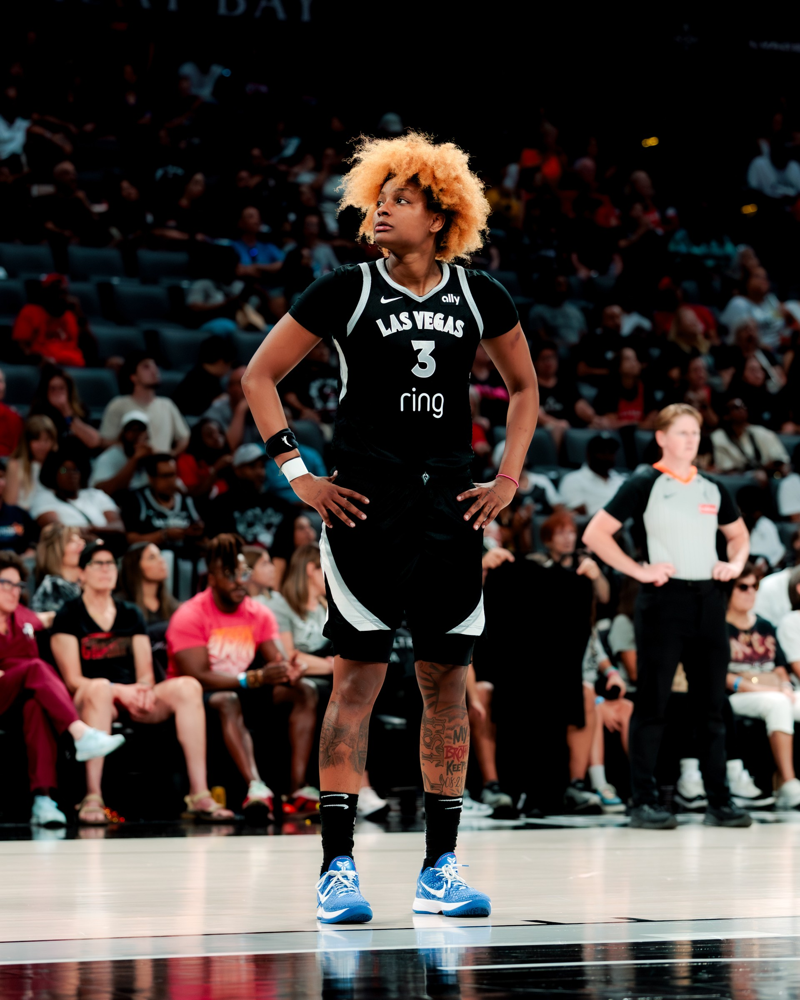
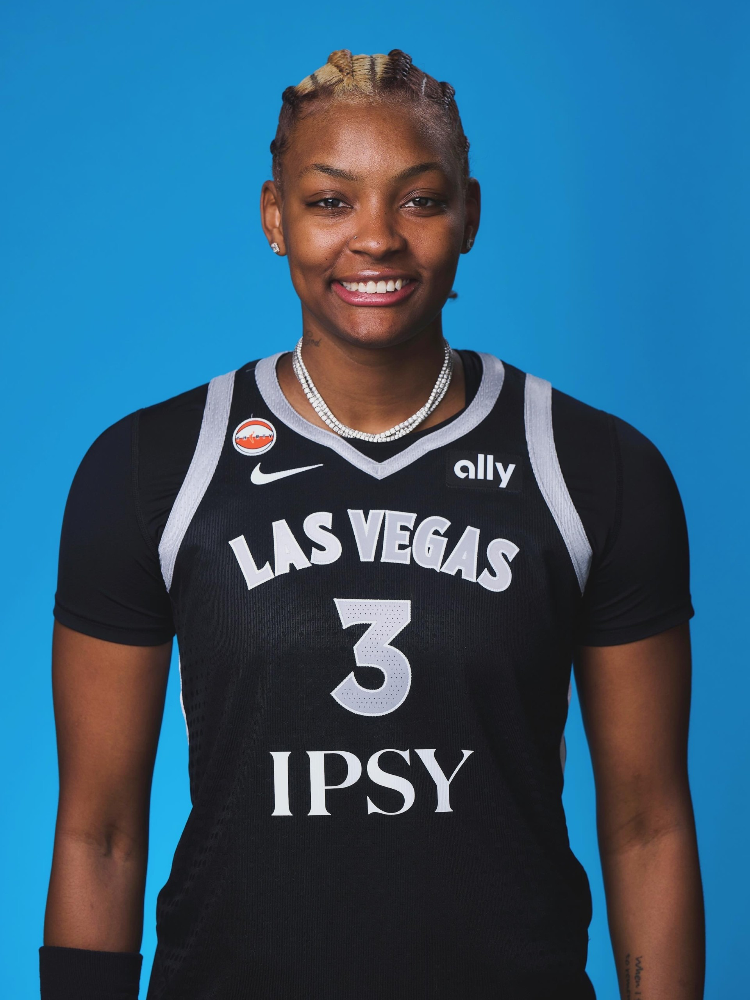
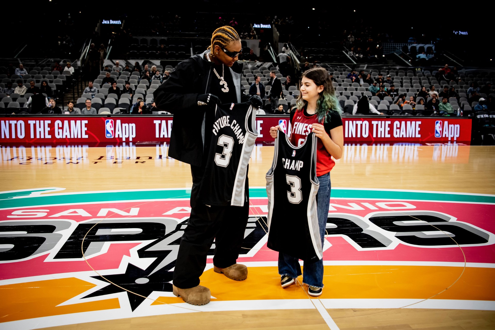

Empower
Help children in need build confidence, possibility, and a stronger path forward.
When purpose meets action, one day can become the start of something bigger.

GROW THE COMMUNITY. CHANGE LIVES. ONE DAY AT A TIME.

The Nalyssa Smith Foundation is dedicated to empowering children in need, supporting individuals experiencing homelessness, and uplifting those affected by lupus. Through education, advocacy, and access to essential resources, the foundation promotes health, well-being, and self-sufficiency.
Help children in need build confidence, possibility, and a stronger path forward.
Connect individuals experiencing homelessness with care and essential resources.
Stand with people affected by lupus through education, advocacy, and awareness.

NaLyssa supported the Lupus Foundation of America through Athletes Unlimited after learning of her grandfather’s diagnosis. She described learning, talking about lupus, and connecting affected people as important first steps.
See the verified storyYour generosity helps turn a shared belief in community into action that changes lives.
Make a donation